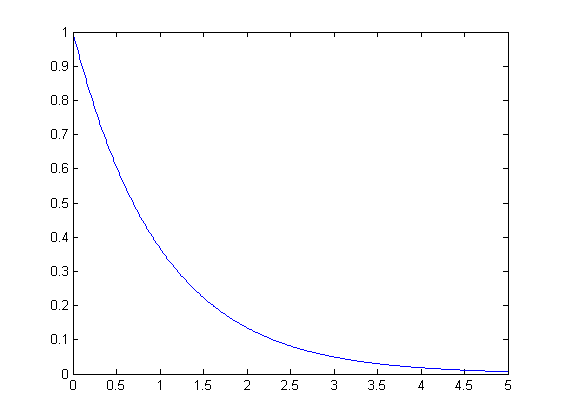
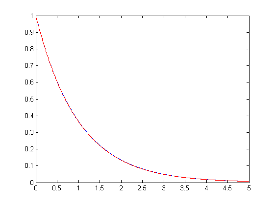
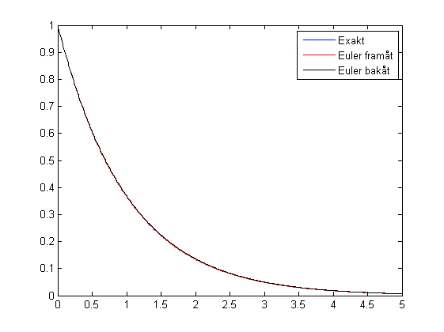

1) Lös dN/dt=-N numeriskt
Contents
a) genom att helt sonika använda den slutna analytiska lösningen
h=.01; t=0:h:5; N=exp(-t); figure plot(t,N)
b) Euler framåt
N1=ones(size(N)); N1(1)=1; for i=2:length(N1), N1(i)=N1(i-1)-h*N1(i-1); end hold on plot(t,N1,'r')
c) Euler bakåt
N2=ones(size(N)); h=t(2)-t(1); N2(1)=1; for i=2:length(N2), N2(i)=N2(i-1)/(1+h); end plot(t,N2,'k') legend('Exakt','Euler framåt','Euler bakåt')
Övning 2
a) Taylor(exp(-h)) = 1 - h + O(h^2) b) 1-h är ju det som redan står här c) Taylor(1/(1+h)) = 1 - h + O(h^2)